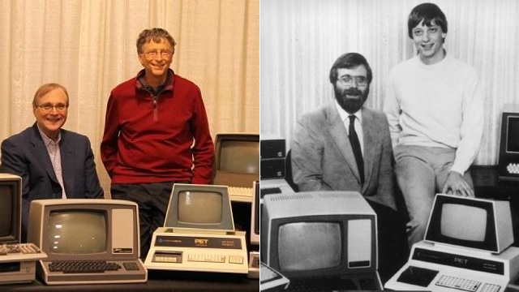

Conhecendo um pouco sobre uma das maiores empresas de tecnologia do mundo
A Microsoft é uma empresa de tecnologia fundada por Bill Gates e Paul Allen, em 1975, nos Estados Unidos. Com sede em Redmond (Washington), a companhia atua no suporte e desenvolvimento de softwares, dispositivos e serviços relacionados à computação pessoal, produtividade e soluções em nuvem. Além disso, a marca também tem expressiva participação nos segmentos de inteligência artificial, realidade virtual e games.
Alguns feitos marcam o início da sua trajetória: o primeiro produto desenvolvido pela empresa foi uma versão do interpretador BASIC, para o computador Altair 8800 da MITS. Em 1976 foi lançado o Microsoft FORTRAN, para computadores baseados em CP/M. Vale ressaltar que a companhia entrou no ramo de sistemas operacionais em 1980, com sua própria versão do Unix, chamada Xenix. Entretanto, em 1985 uma nova página foi escrita na história, quando a Microsoft lançou o Windows. Entre os seus produtos de software mais conhecidos há a linha de aplicativos de produtividade Office e o navegador Internet Explorer, que agora deu lugar ao Edge. Já entre os produtos de hardware, que se destacam na sua linha do tempo, estão os consoles de videogame Xbox, a série de tablets Surface e smartphones como o Microsoft Lumia. Além do investimento nos seus próprios serviços e produtos, para crescer e ampliar o seu campo de ação, a companhia também adquiriu marcas e empresas importantes. Na lista, ao longo do tempo, constam aquisições como a do Skype (2011), Yammer (2012), a compra da divisão de dispositivos e serviços da Nokia (2013), a aquisição completa do GitHub em 2018 e a da Nuance, em 2022. Participante do The Global 2000 da Forbes, o ranking que seleciona as companhias mais poderosas do cenário mundial, a Microsoft ocupa o décimo segundo lugar da edição de 2022, com valor de mercado avaliado em US $2,054 bilhões.